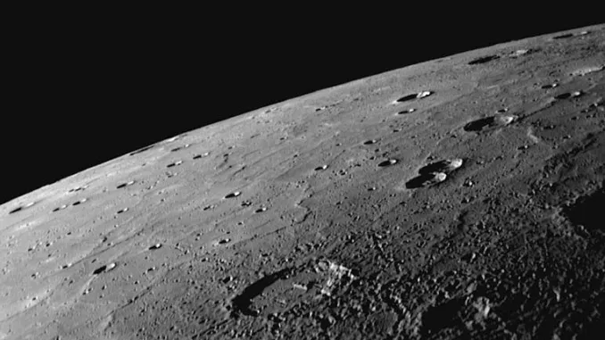
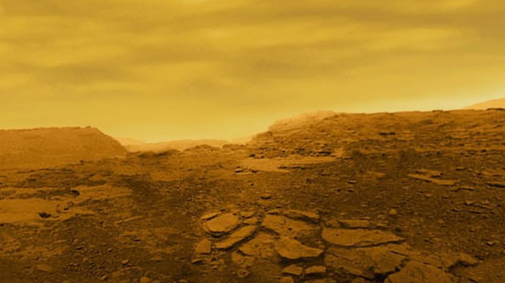
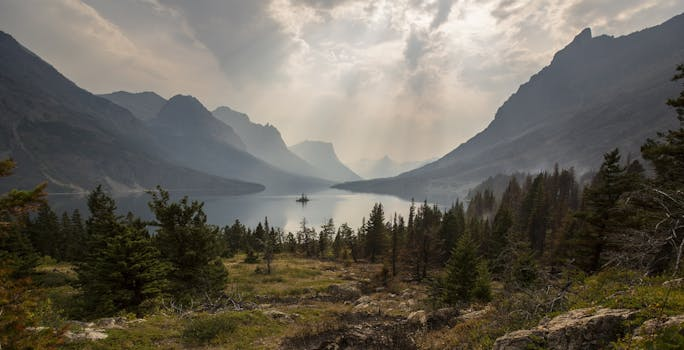
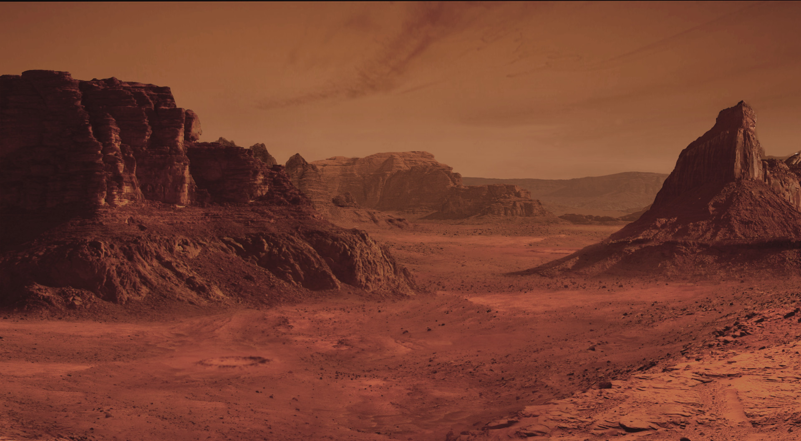
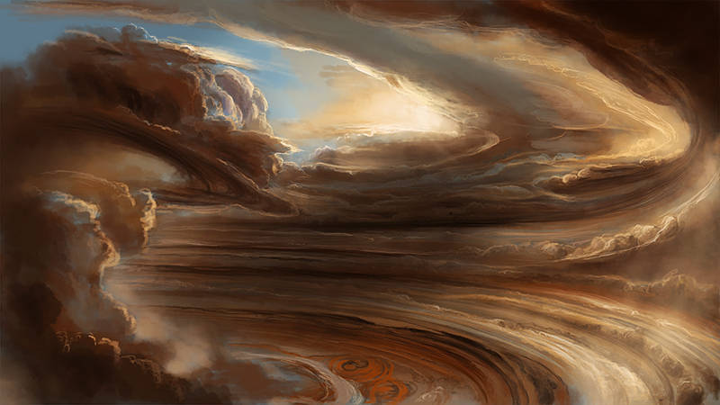
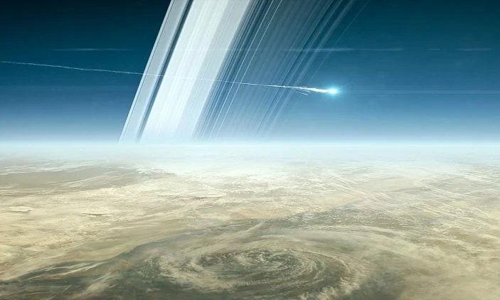
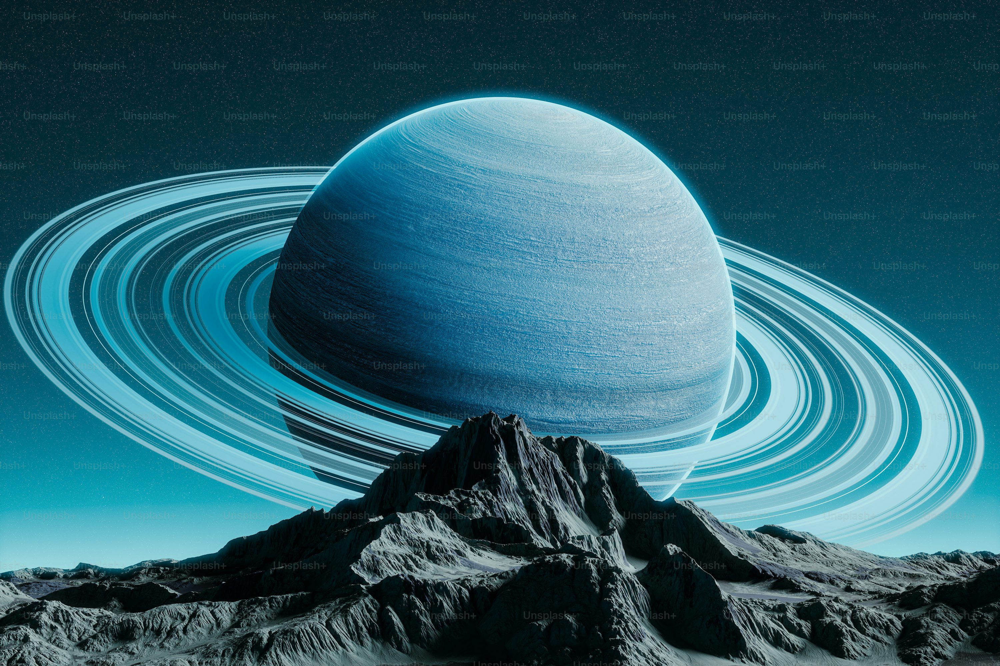
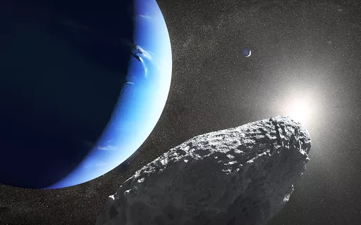
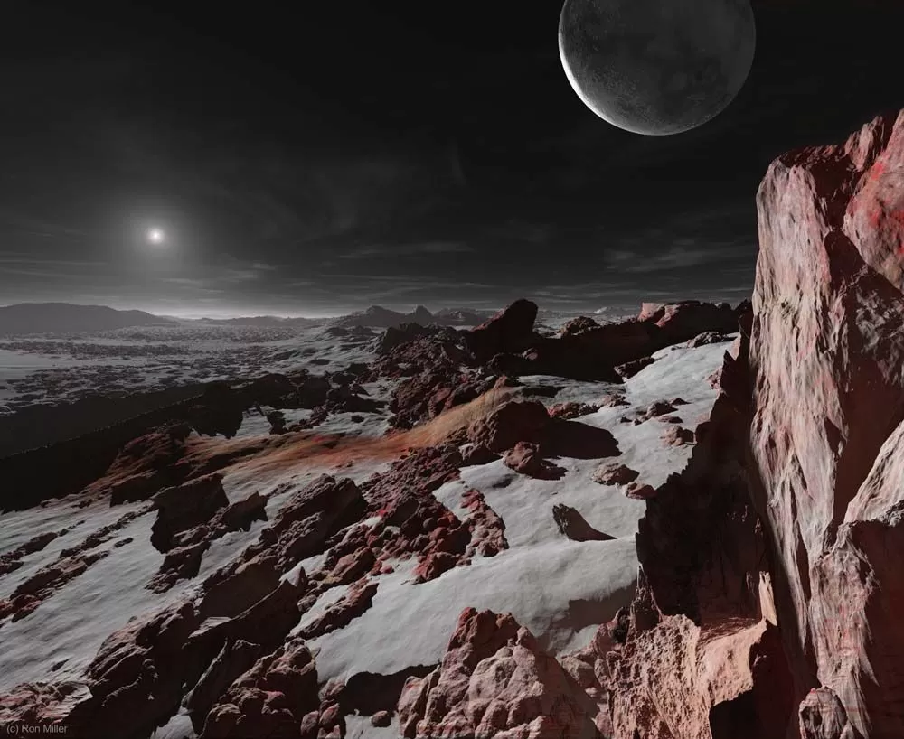

O planeta mais próximo do sol. Ele circunda o sol mais rápido do que todos os outros planetas, e é por isso que os romanos o nomearam em homenagem ao seu deus mensageiro de pés rápidos.
Nomeado em homenagem à deusa romana do amor e da beleza. Nos tempos antigos, Vênus costumava ser duas estrelas diferentes, a estrela da noite e a estrela da manhã.
Terra, nossa casa. É o único planeta conhecido por ter uma atmosfera contendo oxigênio livre, oceanos de água líquida em sua superfície e, é claro, vida.
Quarto planeta a partir do Sol e o segundo menor planeta do sistema solar. Nomeado em homenagem ao deus romano da guerra, muitas vezes descrito como o "Planeta Vermelho".
Júpiter é o maior planeta do sistema solar. Apropriadamente, recebeu o nome do rei dos deuses na mitologia romana.
Saturno é o sexto planeta a partir do sol e o segundo maior planeta do sistema solar. Saturno era o nome romano de Cronos, o senhor dos Titãs.
O primeiro planeta a ser descoberto por cientistas. O planeta é notável por sua inclinação dramática, que faz com que seu eixo aponte quase diretamente para o sol.
Está distante 4,5 bilhões de quilômetros do Sol e demora 156 anos terrestres para completar uma órbita. Foi descoberto em 1846 e recebeu o nome do deus romano do mar.
Plutão, antes considerado o nono e mais distante planeta do sol, é agora o maior planeta anão conhecido no sistema solar.
Mercúrio é o planeta mais próximo do Sol. Como tal, ele orbita o Sol mais rápido do que todos os outros planetas, razão pela qual os romanos o batizaram em homenagem ao seu deus mensageiro de pés velozes.
Os sumérios também conheciam Mercúrio há pelo menos 5.000 anos. Era frequentemente associado a Nabu, o deus da escrita. Mercúrio também recebia nomes diferentes por sua aparição como estrela da manhã e estrela da tarde. Os astrônomos gregos sabiam, no entanto, que os dois nomes se referiam ao mesmo corpo, e Heráclito, por volta de 500 a.C., corretamente supôs que tanto Mercúrio quanto Vênus orbitavam o Sol, não a Terra.
Um dia solar (o período entre meio-dia e meio-dia na superfície do planeta) em Mercúrio dura o equivalente a 176 dias terrestres, enquanto o dia sideral (o tempo de uma rotação em relação a um ponto fixo) dura 59 dias terrestres. Mercúrio está quase sincronizado com o Sol, o que, com o tempo, desacelerou a rotação do planeta para quase igualar sua órbita ao redor do Sol. Mercúrio também possui a maior excentricidade orbital de todos os planetas, com sua distância do Sol variando de 46 a 70 milhões de km.
Um dos cinco planetas visíveis a olho nu, Mercúrio tem apenas 4.879 quilômetros de extensão em seu equador, em comparação com 12.742 quilômetros da Terra.
Embora o planeta seja pequeno, Mercúrio é muito denso. Cada centímetro cúbico tem uma densidade de 5,4 gramas, sendo que apenas a Terra apresenta uma densidade maior. Isso se deve, em grande parte, ao fato de Mercúrio ser composto principalmente de metais pesados e rochas.
À medida que o núcleo de ferro do planeta esfriava e se contraía, a superfície do planeta enrugava-se. Os cientistas chamaram essas rugas de Escarpas Lobadas. Essas escarpas podem atingir até 1,6 km de altura e centenas de quilômetros de comprimento.
Vênus, o segundo planeta a partir do Sol, recebeu esse nome em homenagem à deusa romana do amor e da beleza. O planeta — o único planeta com nome feminino — pode ter sido nomeado em homenagem à divindade mais bela de seu panteão porque ele brilhava mais intensamente entre os cinco planetas conhecidos pelos astrônomos antigos.
Antigamente, acreditava-se que Vênus era composto por duas estrelas diferentes, a estrela da tarde e a estrela da manhã — ou seja, aquelas que apareciam primeiro ao pôr do sol e ao nascer do sol. Em latim, eles eram conhecidos respectivamente como Vesper e Lúcifer. Nos tempos cristãos, Lúcifer, ou "portador da luz", tornou-se conhecido como o nome de Satanás antes de sua queda. Entretanto, observações posteriores de Vênus na era espacial mostram um ambiente muito infernal. Isso faz de Vênus um planeta muito difícil de ser observado de perto, porque naves espaciais não sobrevivem muito tempo em sua superfície.
Leva 243 dias terrestres para girar uma vez em seu eixo (dia sideral). A órbita do planeta ao redor do Sol leva 225 dias terrestres, em comparação aos 365 da Terra. Um dia na superfície de Vênus (dia solar) leva 117 dias terrestres.
Isso significa que Vênus está girando na direção oposta ao Sol, o que também é conhecido como rotação retrógrada. Uma possível razão pode ser uma colisão no passado com um asteroide ou outro objeto que fez com que o planeta alterasse sua trajetória de rotação. Ele também difere da maioria dos outros planetas do nosso sistema solar por não ter satélites naturais.
Somente a Lua é mais brilhante. Com uma magnitude entre -3,8 e -4,6, Vênus é tão brilhante que pode ser visto durante o dia em um dia claro.
Embora seu tamanho e massa sejam semelhantes aos da Terra, os pequenos asteroides são esmagados ao entrarem em sua atmosfera, o que significa que não há pequenas crateras na superfície do planeta. A pressão sentida por um humano na superfície seria equivalente àquela experimentada nas profundezas do mar na Terra.
A Terra, nosso lar, é o terceiro planeta a partir do Sol. É o único planeta conhecido por ter uma atmosfera contendo oxigênio livre, oceanos de água líquida em sua superfície e, claro, vida.
A Terra é o quinto maior planeta do sistema solar — menor que os quatro gigantes gasosos, Júpiter, Saturno, Urano e Netuno, mas maior que os outros três planetas rochosos.
Essa desaceleração está acontecendo de forma quase imperceptível, a aproximadamente 17 milissegundos a cada cem anos, embora a taxa em que ocorre não seja perfeitamente uniforme. Isso tem o efeito de alongar nossos dias, mas acontece tão lentamente que pode levar até 140 milhões de anos para que a duração de um dia aumente para 25 horas.
Devido aos movimentos aparentes do Sol e dos planetas em relação ao seu ponto de vista, cientistas antigos insistiam que a Terra permanecia estática, enquanto outros corpos celestes viajavam em órbitas circulares ao seu redor. Por fim, a visão de que o Sol estava no centro do universo foi postulada por Copérnico, embora este também não seja o caso.
Este fenômeno é causado pelo núcleo de níquel-ferro do planeta, aliado à sua rápida rotação. Este campo protege a Terra dos efeitos do vento solar.
Em porcentagem do tamanho do corpo que orbita, a Lua é o maior satélite de qualquer planeta em nosso sistema solar. Em termos reais, no entanto, é apenas o quinto maior satélite natural.
Marte é o quarto planeta a partir do Sol. Combinando com a cor sangrenta do planeta, os romanos o batizaram em homenagem ao seu deus da guerra. Os romanos copiaram os antigos gregos, que também batizaram o planeta em homenagem ao seu deus da guerra, Ares. Outras civilizações também costumavam dar nomes ao planeta com base em sua cor — por exemplo, os egípcios o chamavam de "Her Desher", que significa "o vermelho", enquanto os antigos astrônomos chineses o apelidavam de "estrela de fogo".
Embora Marte tenha apenas 15% do volume da Terra e pouco mais de 10% da massa terrestre, cerca de dois terços da superfície terrestre são cobertos por água. A gravidade da superfície marciana é de apenas 37% da da Terra (o que significa que seria possível saltar quase três vezes mais alto em Marte).
O Monte Olimpo, um vulcão em escudo, tem 21 km de altura e 600 km de diâmetro. Apesar de ter se formado ao longo de bilhões de anos, as evidências de fluxos de lava vulcânica são tão recentes que muitos cientistas acreditam que ele ainda possa estar ativo.
Até setembro de 2014, houve 40 missões a Marte, incluindo orbitadores, módulos de pouso e rovers, sem contar sobrevoos. As chegadas mais recentes incluem a missão Curiosity em 2012, a missão MAVEN, que chegou em 22 de setembro de 2014, seguida pelo orbitador MOM Mangalyaan da Organização de Pesquisa Espacial Indiana, que chegou em 24 de setembro de 2014. As próximas missões a chegar serão a missão ExoMars da Agência Espacial Europeia, composta por um orbitador, um módulo de pouso e um rover, seguida pela missão de pouso robótico InSight da NASA, com lançamento previsto para março de 2016 e chegada prevista para setembro de 2016.
Elas podem durar meses e cobrir todo o planeta. As estações são extremas porque sua órbita elíptica (em formato oval) ao redor do Sol é mais alongada do que a da maioria dos outros planetas do sistema solar.
Júpiter é o maior planeta do sistema solar. Apropriadamente, recebeu o nome do rei dos deuses da mitologia romana. De forma semelhante, os antigos gregos batizaram o planeta em homenagem a Zeus, o rei do panteão grego.
Júpiter ajudou a revolucionar a maneira como víamos o universo e a nós mesmos em 1610, quando Galileu descobriu as quatro grandes luas de Júpiter — Io, Europa, Ganimedes e Calisto, agora conhecidas como as luas galileanas. Esta foi a primeira vez que corpos celestes foram vistos orbitando um objeto diferente da Terra, um importante apoio à visão copernicana de que a Terra não era o centro do universo.
Apenas o Sol, a Lua e Vênus são mais brilhantes. É um dos cinco planetas visíveis a olho nu da Terra.
Isso foi por volta do século VII ou VIII a.C. Júpiter recebeu o nome do rei dos deuses romanos. Para os gregos, representava Zeus, o deus do trovão. Os mesopotâmicos viam Júpiter como o deus Marduk e patrono da cidade da Babilônia. As tribos germânicas viam este planeta como Donar, ou Thor.
Ele gira em torno de seu eixo uma vez a cada 9 horas e 55 minutos. A rotação rápida achata ligeiramente o planeta, dando-lhe uma forma oblata.
Do nosso ponto de vista da Terra, ele parece se mover lentamente no céu, levando meses para se deslocar de uma constelação para outra.
Saturno é o sexto planeta a partir do Sol e o segundo maior planeta do sistema solar. Saturno era o nome romano para Cronos, o senhor dos Titãs na mitologia grega. Saturno é a raiz da palavra inglesa "saturday" (sábado).
Saturno é o planeta mais distante da Terra visível a olho nu, mas é através de um telescópio que as características mais marcantes do planeta podem ser vistas: os anéis de Saturno. Embora os outros gigantes gasosos do sistema solar — Júpiter, Urano e Netuno — também tenham anéis, os de Saturno são, sem dúvida, os mais extraordinários.
É o quinto objeto mais brilhante do sistema solar e também pode ser facilmente estudado com binóculos ou um pequeno telescópio.
Seu nome é uma homenagem ao deus romano Saturno e era conhecido pelos gregos como Cronos.
Seu diâmetro polar é 90% do seu diâmetro equatorial, devido à sua baixa densidade e rotação rápida. Saturno gira em torno de seu eixo uma vez a cada 10 horas e 34 minutos, tornando-se o segundo dia mais curto entre todos os planetas do sistema solar.
Seu movimento lento contra o fundo de estrelas lhe rendeu o apelido de "Lubadsagush" dos antigos assírios. O nome significa "o mais antigo dos antigos".
Urano é o sétimo planeta a partir do Sol e o primeiro a ser descoberto por cientistas. Embora Urano seja visível a olho nu, foi por muito tempo confundido com uma estrela devido à sua penumbra e órbita lenta. O planeta também é notável por sua inclinação acentuada, que faz com que seu eixo aponte quase diretamente para o Sol.
O astrônomo britânico William Herschel descobriu Urano acidentalmente em 13 de março de 1781, com seu telescópio, enquanto observava todas as estrelas, até aquelas cerca de 10 vezes mais fracas do que as visíveis a olho nu. Uma "estrela" parecia diferente e, em um ano, Urano passou a seguir uma órbita planetária.
É muito tênue para ter sido visto pelos antigos. A princípio, Herschel pensou que fosse um cometa, mas vários anos depois foi confirmado como um planeta. Herschel tentou que sua descoberta fosse chamada de "Sidus Georgiano", em homenagem ao Rei George III. O nome Urano foi sugerido pelo astrônomo Johann Bode. O nome vem da antiga divindade grega Urano.
O planeta gira em direção retrógrada, oposta à forma como a Terra e a maioria dos outros planetas giram.
Durante algumas partes de sua órbita, um ou outro de seus polos aponta diretamente para o Sol e recebe cerca de 42 anos de luz solar direta. No restante do tempo, eles ficam na escuridão.
Assim como os outros gigantes gasosos, ele possui uma camada superior de hidrogênio, à qual se mistura hélio. Abaixo dela, há um "manto" gelado, que envolve um núcleo rochoso e de gelo. A atmosfera superior é composta de água, amônia e cristais de metano que dão ao planeta sua cor azul-claro.
Netuno é o oitavo planeta a partir do Sol. Foi o primeiro planeta a ter sua existência prevista por cálculos matemáticos antes de ser efetivamente observado por um telescópio em 23 de setembro de 1846. Irregularidades na órbita de Urano levaram o astrônomo francês Alexis Bouvard a sugerir que a atração gravitacional de outro corpo celeste poderia ser a responsável. O astrônomo alemão Johann Galle então se baseou em cálculos subsequentes para ajudar a localizar Netuno por meio de um telescópio. Anteriormente, o astrônomo Galileu Galilei havia esboçado o planeta, mas o confundiu com uma estrela devido à sua câmera lenta. Assim como todos os outros planetas vistos no céu, este novo mundo recebeu um nome da mitologia grega e romana — Netuno, o deus romano do mar.
Apenas uma missão sobrevoou Netuno – a Voyager 2 em 1989 – o que significa que os astrônomos realizaram a maioria dos estudos usando telescópios terrestres. Hoje, ainda há muitos mistérios sobre o planeta frio e azul, como por que seus ventos são tão rápidos e por que seu campo magnético é desviado.
Ele não é visível a olho nu e foi observado pela primeira vez em 1846. Sua posição foi determinada por meio de previsões matemáticas. Recebeu o nome do deus romano do mar.
Suas nuvens equatoriais levam 18 horas para completar uma rotação. Isso ocorre porque Netuno não é um corpo sólido.
Apesar de ser menor que Urano, Netuno tem uma massa maior. Abaixo de sua atmosfera densa, Urano é composto por camadas de gases hidrogênio, hélio e metano. Elas envolvem uma camada de água, amônia e gelo de metano. O núcleo interno do planeta é feito de rocha.
O metano absorve a luz vermelha, o que faz o planeta parecer de um lindo azul. Nuvens altas e finas flutuam na atmosfera superior.
Plutão, outrora considerado o nono e mais distante planeta do Sol, é agora o maior planeta anão conhecido no sistema solar. É também um dos maiores membros conhecidos do Cinturão de Kuiper, uma zona sombreada além da órbita de Netuno, que se acredita ser povoada por centenas de milhares de corpos rochosos e gelados, cada um com mais de 100 quilômetros de diâmetro, juntamente com 1 trilhão ou mais de cometas.
Em 2006, Plutão foi reclassificado como planeta anão, uma mudança amplamente considerada um rebaixamento. A questão do status de Plutão como planeta tem gerado controvérsia e acirrado o debate na comunidade científica e entre o público em geral desde então. Em 2017, um grupo científico (incluindo membros da missão New Horizon) propôs uma nova definição de planetidade baseada em "objetos redondos no espaço menores que estrelas", o que faria o número de planetas em nosso sistema solar aumentar de 8 para aproximadamente 100.
Este é um nome posterior para o mais conhecido Hades e foi proposto por Venetia Burney, uma estudante de onze anos de Oxford, Inglaterra.
Foi nessa época que a IAU formalizou a definição de planeta como "Um planeta é um corpo celeste que (a) está em órbita ao redor do Sol, (b) tem massa suficiente para que sua autogravidade supere as forças do corpo rígido, de modo que assuma uma forma de equilíbrio hidrostático (quase redonda) e (c) tenha limpado a vizinhança ao redor de sua órbita."
Durante os 76 anos entre sua descoberta e a época em que foi reclassificado como planeta anão, Plutão completou menos de um terço de sua órbita ao redor do Sol.
As luas são Caronte (descoberto em 1978), Hidra e Nix (ambas descobertas em 2005), Cérbero, originalmente P4 (descoberta em 2011) e Estige, originalmente P5 (descoberta em 2012), com designações oficiais S/2011 (134340) 1 e S/2012 (134340) 1.